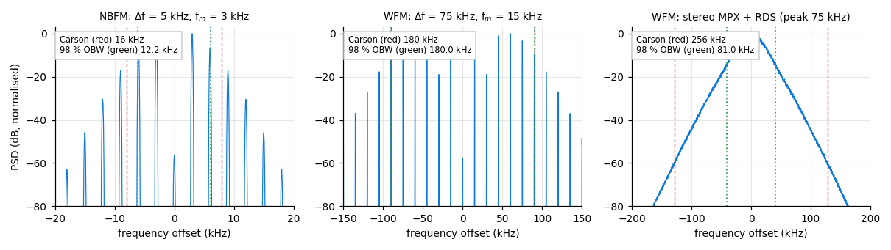
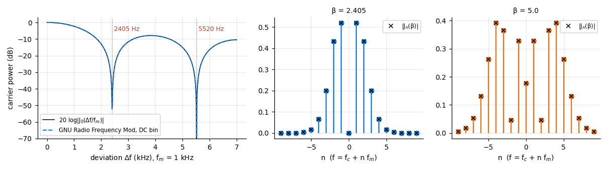
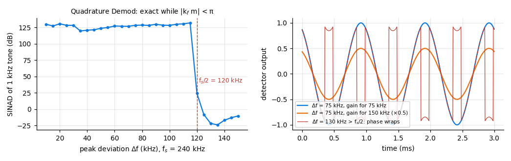
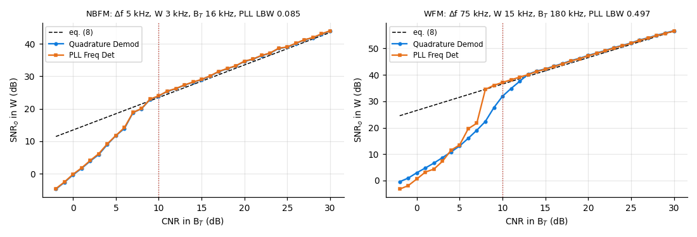
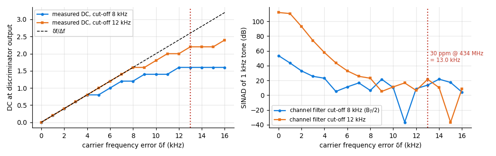
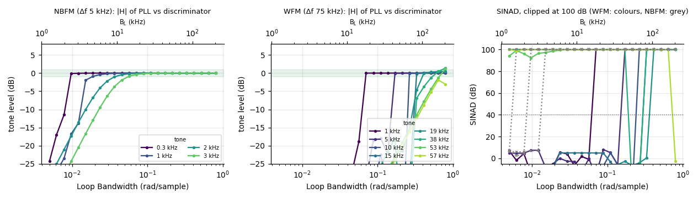
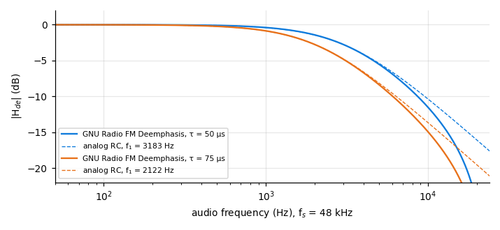
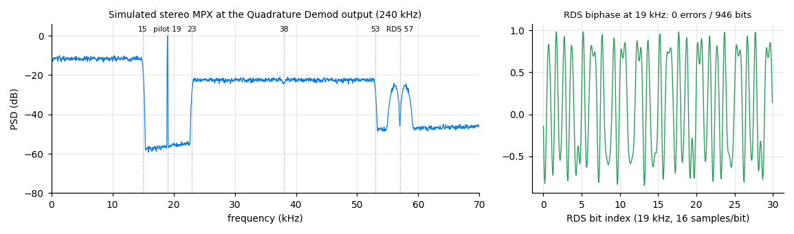

FM Radio, Stereo and RDS
One-page summary: why FM resists noise, what it costs, and why it fails suddenly
Why FM is more robust than AM. In AM the message is the envelope, so any noise that adds to the envelope goes straight to the output: with coherent detection the output SNR is at best equal to the baseband SNR, PR/(N0W). In FM the amplitude carries nothing — a limiter (or, in an SDR, taking only the angle of the samples) removes amplitude noise entirely — and the message is the rate of change of phase. A noise component much weaker than the carrier only tilts the phasor by a small angle ≈ nq(t)/A; the discriminator differentiates this phase, so the output noise has a spectrum that grows as f² (parabolic) and its power falls as the carrier power rises, while the message is scaled up by the deviation Δf. Above threshold, for a full-deviation tone, SNRo = 3/2·(Δf/W)²·(BT/W)·CNR. With β = 5 (broadcast FM) the gain over the baseband SNR is 3/2·25 = 37.5 → 15.7 dB (26.5 dB over the CNR in BT), and pre-/de-emphasis adds roughly another 10–13 dB because the de-emphasis filter removes precisely the strong high-frequency part of the parabolic noise.
The price. The improvement is bought with bandwidth: by Carson’s rule BT ≈ 2(Δf + W) = 2(β + 1)W, so every doubling of the deviation buys ≈ 6 dB of SNR but almost doubles the channel width (broadcast mono: 180 kHz for 15 kHz of audio, six times the 30 kHz of DSB AM). A wider channel collects more noise, so more power is needed to stay above threshold (Task 2.5), and the channel filter and the sample rate must be larger. FM also needs a stable carrier frequency: an offset becomes a DC term and can push the signal out of a narrow channel filter (Task 2.6).
Why it breaks down below a certain level. The small-angle argument holds only while the carrier is much larger than the noise. When the CNR in BT approaches about 10 dB, the noise phasor occasionally becomes larger than the carrier and the resultant phasor encircles the origin: the phase jumps by 2π in a very short time. The discriminator turns each jump into an impulse of area 2π (a “click”) whose energy covers the whole audio band. The click rate grows exponentially as the CNR falls, and the message itself is suppressed at the same time, so below threshold the output SNR collapses much faster than the input CNR — the FM advantage disappears within a few dB. A PLL detector only sees the noise inside its loop bandwidth, which for large β can be narrower than BT; it slips cycles at a lower CNR and extends the threshold by a few dB (our simulation: about 4 dB for β = 5, nothing for the narrow-band link). In short, FM trades a slowly degrading quality for high quality followed by a sharp cliff.
Theory questions
2.1 FM spectrum of a single tone and Carson’s rule
With m(t) = cos(2πfmt) in eq. (1): φ(t) = 2πΔf ∫0t cos(2πfmτ) dτ = (Δf/fm) sin(2πfmt) = β sin(2πfmt). The complex envelope x(t) = A ejβ sin(2πfmt) is periodic with period 1/fm, so it has a Fourier series with coefficients
cn = (1/2π) ∫−ππ ej(β sin θ − nθ) dθ = Jn(β) (Bessel’s integral), i.e. ejβ sin θ = Σn Jn(β) ejnθ (Jacobi–Anger).
Then s(t) = Re{x(t) ej2πfct} = A Σn=−∞∞ Jn(β) cos(2π(fc + n fm)t), which is eq. (2). Since Σ Jn²(β) = 1, the total power A²/2 is constant and is only redistributed among the lines; J−n = (−1)nJn, so the magnitude spectrum is symmetric.
| Case (Δf = 75 kHz) | fmax | BT = 2(Δf + fmax) |
|---|---|---|
| Mono audio only | 15 kHz | 180 kHz |
| Full stereo baseband | 53 kHz | 256 kHz |
FM broadcast stations are planned on a 200 kHz spacing (in ITU Region 1 the tuning raster is 100 kHz, but stations serving the same area are kept at least 200 kHz apart). The mono value, 180 kHz, is the one close to the channel spacing; the stereo value of 256 kHz is larger than the spacing. This works in practice because Carson’s rule assumes full deviation at the highest modulating frequency, while real programme material has its energy at low frequencies and the L−R subcarrier is usually at a low level. Our simulated stereo multiplex (programme-like noise audio, peak deviation exactly 75 kHz, RMS deviation 16.4 kHz) has a 98 % occupied bandwidth of only 81 kHz (Fig. 2). For tones the rule is confirmed: β = 5 (15 kHz tone) gives a measured 98 % bandwidth of 180.0 kHz, equal to Carson.

2.2 Carrier nulls and calibration of the deviation
The carrier line has amplitude J0(β); it vanishes at β = 2.4048, 5.5201, 8.6537 … With fm = 1 kHz the first two nulls are at Δf = 2.405 kHz and 5.520 kHz. Simulation with the GNU Radio Frequency Mod block (carrier = DC bin of the complex baseband, Δf swept in 10 Hz and then 0.5 Hz steps): 2405.0 Hz and 5520.0 Hz, and the measured line amplitudes match |Jn(β)| (Fig. 1).

Calibration with only a spectrum display. (1) Modulate with a pure tone of known frequency fm (generated in software, so its frequency is exact). (2) Set the FFT resolution well below fm (e.g. 50–100 Hz) so the carrier line is separated from the sidebands. (3) Starting from zero, raise the tone amplitude (or the Sensitivity) slowly: the carrier line falls and disappears at the first null, where Δf = 2.405·fm exactly, independent of any gain or power calibration. (4) The setting at the null gives the modulator constant (Hz per unit input); the second null (5.520·fm) checks linearity. To set a target deviation directly, choose fm = Δf/2.405 and adjust the level until the carrier vanishes: Δf = 5 kHz → fm = 2079 Hz; Δf = 75 kHz → fm = 31.19 kHz (first null) or 13.59 kHz (second null). The null is a sharp minimum, more than 40 dB deep, so the method is accurate to a fraction of a percent.
2.3 The discrete discriminator
From eq. (4), x[n] = A ejφ[n] with φ[n] − φ[n−1] = kf m[n]. Hence x[n]x*[n−1] = A² ej kf m[n]. arg(·) returns the principal value in (−π, π], and arg(A² ejθ) = θ exactly if and only if θ ∈ (−π, π] (the factor A² > 0 does not change the angle, so no limiter is needed). Therefore y[n] = kf m[n] for every m[n] with |kf m[n]| < π, and m̂[n] = y[n]/kf = fs/(2πΔf)·y[n] reproduces the message exactly, with no approximation of a derivative. If |kf m[n]| exceeds π, y[n] wraps by 2π and the output shows spikes.
Maximum deviation at fs = 240 kHz: kf·1 = 2πΔf/fs < π ⇒ Δfmax = fs/2 = 120 kHz (the instantaneous frequency must stay inside the Nyquist band; with a carrier offset δf the condition becomes Δf + |δf| < fs/2). Simulation (Fig. 3): SINAD of a 1 kHz tone above 119 dB (numerical precision) for every Δf up to 115 kHz, 24 dB at exactly 120 kHz and negative beyond (phase wraps).
Receiver set for twice the real Δf: the gain fs/(2π·2Δf) is half the correct value, so the output is the correct message scaled by ½: −6.02 dB in level, no distortion (simulated amplitude 0.500 instead of 1.000). Conversely, a too-small Δf setting makes the audio too loud and may clip later stages.

2.4 Discriminator vs PLL detector
| Aspect | Discriminator (Quadrature Demod) | PLL detector (PLL Freq Det) |
|---|---|---|
| Parameters to design | Only the gain fs/(2πΔf); the channel filter in front sets the noise bandwidth. | Loop bandwidth (with the fixed damping it sets αL, βL and BL ≈ 1.06·LBW·fs), Max/Min phase per sample (pull-in range, must cover Δf + offset), output gain fs/(2πΔf). |
| Above threshold | Follows eq. (8). Simulation at CNR = 20 dB: NBFM 34.6 dB, WFM 47.4 dB (eq. 8: 33.5 / 46.5 dB). | Identical when the loop follows the message: 34.6 / 47.2 dB. A too-narrow loop low-passes or distorts the audio (Fig. 4). |
| Near threshold | Clicks when the noise phasor encircles the origin; within 1 dB of eq. (8) down to CNR = 9 dB (NBFM) and 12 dB (WFM). | Sees only the noise in BL; NBFM: no gain (9 dB), WFM: 8 dB, i.e. ≈ 4 dB of threshold extension (at CNR = 10 dB: 37.1 vs 31.9 dB). |
| Carrier frequency error | Gives a DC term δf/Δf; works as long as the signal stays inside the channel filter and |fi| < fs/2. | Also gives DC, and the offset uses up part of the pull-in range: if |δf| + Δf exceeds Max phase/sample the loop never locks. |
| Computational load | Per sample: 1 complex multiply + 1 atan2. | Per sample: complex multiply, phase detector (atan2), NCO sin/cos, two loop-filter updates and limit checks — about 2–3× the discriminator, still negligible next to the channel FIR (≈ 69 M multiply-adds/s for 289 taps at 240 kHz output). |
Why the PLL advantage grows with β. The discriminator’s threshold is set by the CNR in the whole channel, BT = 2(β + 1)W. The PLL needs a loop that follows the instantaneous frequency, whose rate of change is set mainly by the message bandwidth W, and the noise that causes cycle slips is the noise inside BL. For small β, BT ≈ 2W and the loop must be about as wide as the channel (our NBFM design: BL ≈ 21.6 kHz ≥ BT = 16 kHz), so the PLL sees the same noise and the thresholds coincide. For large β, BT grows ∝ β while the needed loop width grows more slowly, so the CNR inside the loop is higher than the CNR in BT and the loop keeps a small phase error at CNRs where the discriminator already clicks. This is what Fig. 5 shows: no difference for β = 1.67, about 4 dB for β = 5.

2.5 FM improvement and its price
Insert CNR = PR/(N0BT) into eq. (8): SNRo = 3/2·(Δf/W)²·PR/(N0W) — BT cancels. At constant received power, doubling Δf (with BT following Carson) multiplies SNRo by 4: +6.02 dB. The threshold, however, is a CNR in BT: PR,th = 10·N0BT, so the received power needed to stay above threshold rises by 10 log(BT,new/BT,old):
| Link | BT before | BT after doubling Δf | SNRo change | Threshold power change |
|---|---|---|---|---|
| NBFM, W = 3 kHz, Δf 5 → 10 kHz | 16 kHz | 26 kHz | +6.0 dB | +2.1 dB |
| WFM, W = 15 kHz, Δf 75 → 150 kHz | 180 kHz | 330 kHz | +6.0 dB | +2.6 dB |
| Limit β ≫ 1 | BT ∝ Δf | +6.0 dB | +3.0 dB | |
The extra deviation therefore helps only strong signals; weak signals reach the threshold 2–3 dB earlier, and the wider channel needs a wider filter and a higher sample rate.
2.6 Carrier frequency error
With an error δf the received phase is φ[n] = kf Σ m + 2πδf·n/fs, so φ[n] − φ[n−1] = kf m[n] + 2πδf/fs, and after the gain fs/(2πΔf): m̂[n] = m[n] + δf/Δf — a constant (DC) term. For 30 ppm at 434 MHz: δf = 30·10−6 × 434 MHz = 13.02 kHz, a DC of 13.02/5 = 2.6 times full scale for Δf = 5 kHz.
Problem with BT = 16 kHz: the error is larger than the whole half-bandwidth (8 kHz). The signal occupies 13.0 ± 8 kHz = 5…21 kHz, so a channel filter centred on the nominal frequency passes only its lowest few kHz: most of the signal power is removed, the noise in the pass band is unchanged, and what is left is strongly distorted. In the simulation (Fig. 6) the SINAD of a 1 kHz tone falls from 53.6 dB to 33 dB at only 2 kHz error and to 13.7 dB at 13 kHz; the measured DC stops following δf/Δf as soon as the signal leaves the filter. A 12 kHz cut-off tolerates about 4 kHz (SINAD 58 dB) but not 13 kHz. The DC term itself is harmless for audio (blocked by the sound card or a DC blocker), but it uses up the pull-in range of a PLL. Remedy: measure the offset on the spectrum first and correct it with the centre frequency of the Freq Xlating FIR Filter (the rx_offset slider of our flowgraphs) or the LO frequency, or transmit and receive with the same Pluto (common reference, δf ≈ 0).

Design of the rate chain and the block constants (Table 3)
Number of taps of a Hamming-window FIR: N ≈ 3.3·fs/Δftr (handout). GNU Radio’s firdes.low_pass uses its own estimate (≈ 2.4·fs/Δftr), given in brackets.
| Quantity | Value | Numerical reason |
|---|---|---|
| Input rate, decimations and intermediate rates to 48 kHz | 2.4 MS/s → Freq Xlating FIR ↓10 → 240 kHz → detector → audio FIR ↓5 → 48 kHz. RDS: 240 kHz → shift 57 kHz, ↓10 → 24 kHz → ×19/24 → 19 kHz | 240 kHz complex covers ±120 kHz ≥ 75 kHz deviation + sidebands; as a real rate after the detector it holds the MPX up to 60 kHz (RDS) with margin. 2.4 M/240 k = 10 and 240 k/48 k = 5 are integers; 48 kHz is a native sound-card rate; 19 kHz/1187.5 bit/s = exactly 16 samples per RDS bit. |
| Channel filter, WFM | at 2.4 MS/s: cut-off 100 kHz, transition 20 kHz, N ≈ 396 (firdes: 289) | Passes the mono Carson band ±90 kHz; the stop band starts at 120 kHz = Nyquist of the 240 kHz output, so nothing aliases into the pass band; rejects the next station at ±200 kHz. The stereo sidebands (±128 kHz) are partly cut: simulated stereo separation 28.9 dB (24.7 dB with 80 kHz, 32.3 dB with 115 kHz cut-off). |
| Channel filter, NBFM | two stages: the same first stage, then at 240 kHz cut-off 10 kHz, transition 4 kHz, N ≈ 198 (firdes: 145) | BT/2 = 8 kHz plus 2 kHz margin for residual frequency error; stop band from 14 kHz. In a single stage at 2.4 MS/s it would need N ≈ 1980 taps (firdes: 1445), about 7× more multiplications. |
| Audio filter (240 kHz → 48 kHz) | WFM: 15 kHz / 5 kHz, N ≈ 159 (115); NBFM: 3.5 kHz / 2 kHz, N ≈ 396 (289) | Stop band (≤ 20 kHz) below the 24 kHz Nyquist of the 48 kHz output; removes pilot, L−R and RDS before decimation. |
| Quadrature Demod Gain and Frequency Mod Sensitivity, Δf = 5 kHz | Gain = 240000/(2π·5000) = 7.639; Sensitivity = 2π·5000/240000 = 0.1309 rad/sample (0.01309 if the modulator runs at 2.4 MS/s, as in our transmitter) | Eq. (4)–(5): kf = 2πΔf/fs, gain = 1/kf. (WFM 75 kHz: gain 0.5093, sensitivity 1.963 rad/sample at 240 kHz.) |
| PLL Loop Bandwidth and frequency limits, NBFM | LBW = 0.085 (BL ≈ 21.6 kHz); Max/Min = ±2π·15 kHz/240 kHz = ±0.393 rad/sample | Simulation (Fig. 4): the smallest LBW with a flat (±1 dB) and undistorted (SINAD ≥ 40 dB) response up to 3 kHz is 0.057 (BL 14.4 kHz); ×1.5 margin. Range = 5 kHz deviation + 10 kHz for frequency error. |
| PLL Loop Bandwidth and frequency limits, WFM | LBW = 0.50 (BL ≈ 126 kHz); Max/Min = ±2π·110 kHz/240 kHz = ±2.88 rad/sample | Smallest LBW that keeps lock and stays flat to 15 kHz at the full 75 kHz deviation: 0.33 (BL ≈ 84 kHz); ×1.5. The handout’s example value 0.118 (BL = 30 kHz) is fine for NBFM but loses lock with 75 kHz deviation at audio frequencies above ≈ 5 kHz. |
| Transmitter attenuation for −60 dBm at the receiver | 36.5 dB | +7 dBm − A − 30 dB pad − 0.5 dB cable = −60 dBm ⇒ A = 36.5 dB (Pluto steps of 0.25 dB); 50 dB below the −10 dBm limit. With A = 40 dB: −63.5 dBm (example 4). |
GNU Radio simulations behind the numbers
How we ran it. All signals pass through the GNU Radio 3.10.12 blocks used in the session (Frequency Mod, Quadrature Demod, PLL Freq Det, Freq Xlating FIR Filter, Decimating FIR, Rational Resampler, PLL Carrier Regeneration, FM Deemphasis) through vector sources and sinks; the test signals and the analysis (Blackman–Harris FFT, SINAD, Welch PSD) are in numpy. One script (fm_prelab_sim.py, 43 s on our laptop) produces every figure and the file prelab-data.json.
PLL loop bandwidth (used for Table 3 and prediction 5)

Two different failure modes appear. For NBFM (peak phase excursion only 1.7 rad) a slow loop simply low-passes the instantaneous frequency: the 3 kHz tone drops smoothly while the SINAD stays high. For WFM the phase error grows with the deviation, and below a critical LBW the loop slips cycles: the 1 kHz tone needs ≥ 0.07, 5 kHz ≥ 0.17, 15 kHz ≥ 0.33. The stereo subcarrier band (38–53 kHz) and RDS (57 kHz) are still off by 1–3 dB even at the largest bandwidths (0.64–0.8), so the PLL detector at 240 kHz suits mono audio, but stereo and RDS should be taken from the discriminator.
De-emphasis

Iran is in ITU Region 1, where broadcast FM uses τ = 50 µs (f1 = 3183 Hz); GNU Radio’s default is 75 µs. Using 75 µs on a 50 µs station cuts the treble by 3.4 dB at 15 kHz (dull audio); our flowgraphs use τ = 50 µs.
The complete rate plan at 2.4 MS/s: mono, stereo and RDS
A 1 s test signal at 2.4 MS/s held two FM stations (the wanted one at +500 kHz with L = 1 kHz tone, R = 0, pilot and RDS; an interferer at −400 kHz, 6 dB weaker) plus noise. The receiver followed Fig. 5 of the handout: Freq Xlating FIR (289 taps, ↓10) → Quadrature Demod (240 kHz) → pilot band-pass (579 taps) + PLL Carrier Regeneration → 38 kHz reference = (pilot)², with a Delay of 289 samples on the MPX path to match the band-pass filter → L±R audio filters ↓5 → 48 kHz.

| Check | Result |
|---|---|
| Stereo separation (L tone leaking into R) | 28.9 dB with the 100 kHz channel filter; L SINAD 43.0 dB |
| Mono (L+R) output vs decoded L | 0.47 vs 0.92 — L is twice the mono sum, as expected for R = 0 |
| RDS samples per bit at 19 kHz | 19000/1187.5 = 16 exactly |
| RDS bits recovered (biphase matched filter + differential decoding) | 0 errors in 946 bits; 1187.5/104 = 11.4 groups per second |
The separation is limited by the channel filter cutting the outer sidebands of the stereo signal (24.7 dB at 80 kHz, 32.3 dB at 115 kHz cut-off) — worth checking in the second session. The RDS carrier phase was set offline from the data; in the lab a Costas loop / Constellation Receiver does this.
Flowgraphs for the session
- lab3_fm_sim.grc — no hardware: tone → Frequency Mod → carrier error and AWGN at a chosen CNR → the receiver of Table 3 with a run-time choice of Quadrature Demod or PLL Freq Det (QT GUI Chooser + Selector), an NBFM/WFM switch, and sliders for loop bandwidth, CNR, frequency error and receiver tuning correction; spectra of the channel, the detector output and the audio.
- lab3_fm_link.grc — the same receiver fed by the Pluto, with the Pluto transmitting the FM tone at 434 MHz (cable + 30 dB pad only; the TX attenuation slider starts at 40 dB and cannot go below 36.5 dB).
Both were generated by make_grc.py and compiled with grcc 3.10.12; the simulation flowgraph was run for 5 s in both modes and with both detectors. The Pluto flowgraph has not yet been tested on hardware.
Prediction table for session 1 (Table 4)
| # | Quantity | Prediction | Measured |
|---|---|---|---|
| 1 | The two deviations at which the carrier vanishes, fm = 1 kHz (Hz) | 2405 and 5520 Hz (2.4048 and 5.5201 × fm; simulation 2405.0 / 5520.0 Hz) | |
| 2 | Occupied bandwidth of the NBFM link, Δf = 5 kHz, fm = 3 kHz (kHz) | 16 kHz by Carson; the lines at ±3, ±6 kHz hold 98.0 % (12 kHz) and 99 % needs 18 kHz, so a spectrum display will show 12–18 kHz depending on the power criterion | |
| 3 | Power at the receiver input with 40 dB TX attenuation (dBm) | −63.5 dBm (7 − 40 − 30 − 0.5) | |
| 4 | Frequency error between TX and RX at the team frequency (Hz) | ≈ 0 Hz if TX and RX are the same Pluto (one 40 MHz reference for both synthesizers); with two different Plutos up to ±50 ppm × 434 MHz = ±21.7 kHz worst case — our Pluto was 26 ppm slow in Lab 1, i.e. ≈ −11 kHz against an accurate reference | |
| 5 | Smallest Loop Bandwidth that gives the WFM station without distortion | ≈ 0.33 (BL ≈ 84 kHz) for 15 kHz audio at full deviation; real programme rarely has full deviation at high audio frequencies, so audible distortion may start lower, around 0.15–0.2; below ≈ 0.07 even low notes break up |
Three likely mistakes and how to prevent them
- Too much power into the receiver, or radiating (transmission safety). Running the Pluto sink with a low attenuation (the GRC default is 10 dB) and no pad gives +7 − 10 − 0.5 = −3.5 dBm at the receiver, above the −10 dBm limit; an antenna left on the TX port radiates at 434 MHz. Prevention: compute the level before connecting (Table 3: ≥ 36.5 dB with the 30 dB pad, start at 40 dB → −63.5 dBm); fit the 30 dB pad directly on the TX port; never connect an antenna to TX; connect all cables before starting the flowgraph and stop it before changing anything; check the operating frequency (434 MHz) in the flowgraph before pressing Run.
- Wrong rate in a gain or filter. Using samp_rate (2.4 MS/s) instead of quad_rate (240 kHz) in the Quadrature Demod Gain or the modulator Sensitivity scales the output by 10 (too quiet, or phase wrapping); an audio sink that is not at 48 kHz gives under-runs (“aUaU”); the default 75 µs de-emphasis instead of 50 µs dulls the audio by 3.4 dB at 15 kHz. Prevention: define samp_rate, quad_rate, audio_rate and dev as variables and build every parameter from them; check that a full-deviation tone gives amplitude ≈ 1 after the detector (both detectors must give the same level).
- Frequency offset and PLL settings. An uncorrected offset moves the NBFM signal out of the narrow channel filter (13 kHz at 30 ppm; 2 kHz already costs 20 dB of SINAD with an 8 kHz filter) and outside the PLL pull-in range, so the PLL never locks; a loop bandwidth taken from the handout example (0.118) loses lock on a 75 kHz WFM station. Prevention: look at the spectrum first and correct the offset (rx_offset); set Max/Min phase per sample to cover Δf + |δf| with margin; start the PLL at the Table 3 values (NBFM 0.085, WFM 0.5) and only then sweep the bandwidth down to find prediction 5.
Scripts, flowgraphs and raw results
- In the Lab 3 files on the SDR Lab page: fm_prelab_sim.py (all simulations and figures), make_grc.py, lab3_fm_sim.grc, lab3_fm_link.grc, sim_results.json.
- All numbers of this page: prelab-data.json · PDF version: prelab.pdf
- J. G. Proakis and M. Salehi, Communication Systems Engineering, 2nd ed., Prentice Hall, 2002 — angle modulation; effect of noise on angle modulation (threshold, pre-/de-emphasis).
- M. Lichtman, PySDR: A Guide to SDR and DSP using Python, chapter “End-to-End Example” (FM reception and RDS decoding), https://pysdr.org
- ITU-R Recommendations BS.450 (FM sound broadcasting at VHF) and BS.643 (Radio Data System).
- B. Bloessl, gr-rds: FM RDS/TMC transceiver for GNU Radio, https://github.com/bastibl/gr-rds
- GNU Radio project, GNU Radio Wiki: block documentation, https://wiki.gnuradio.org